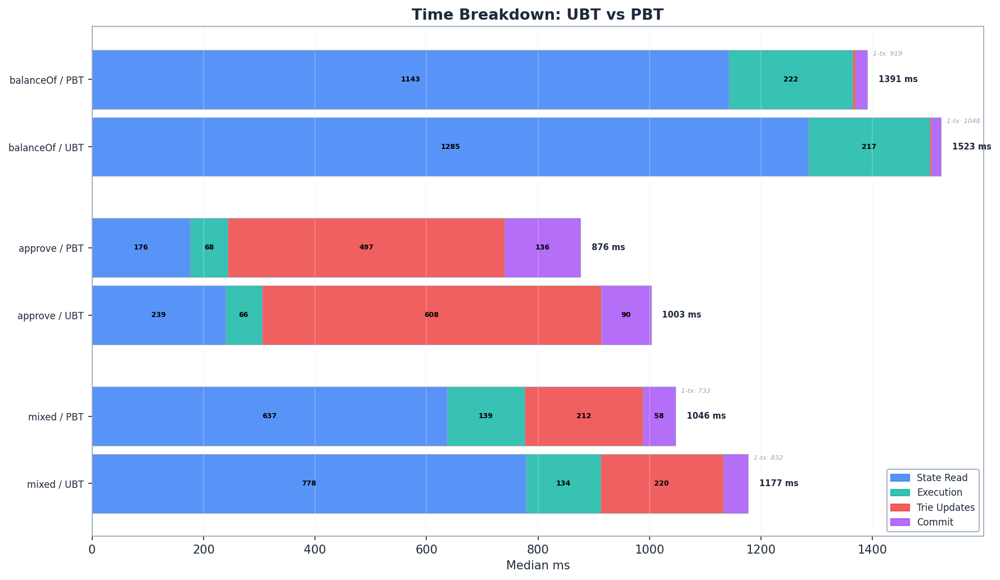
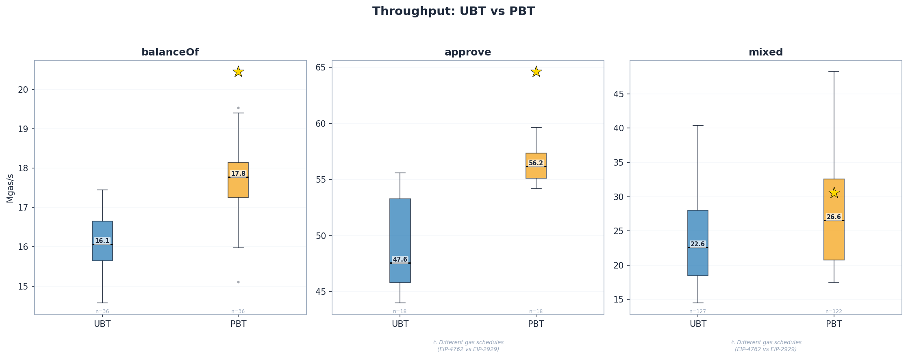
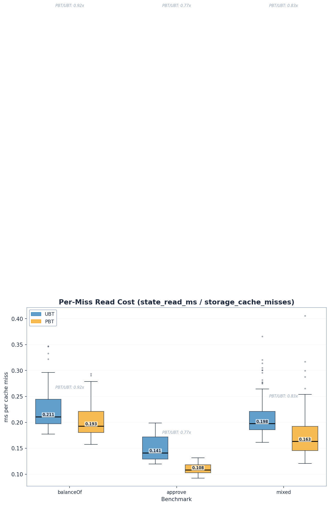
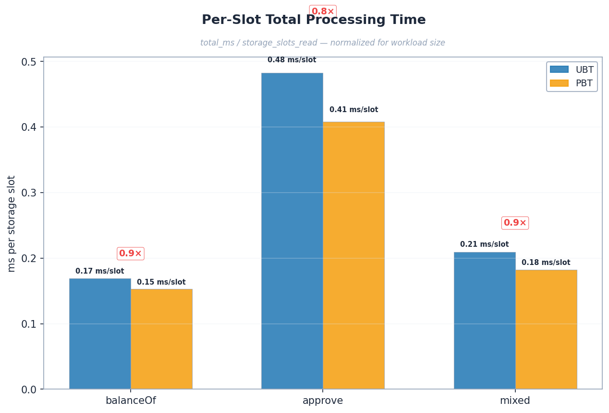
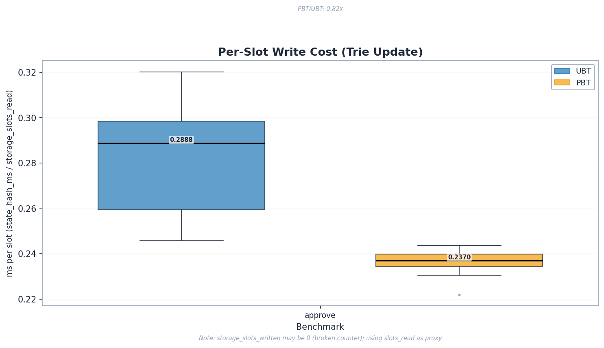
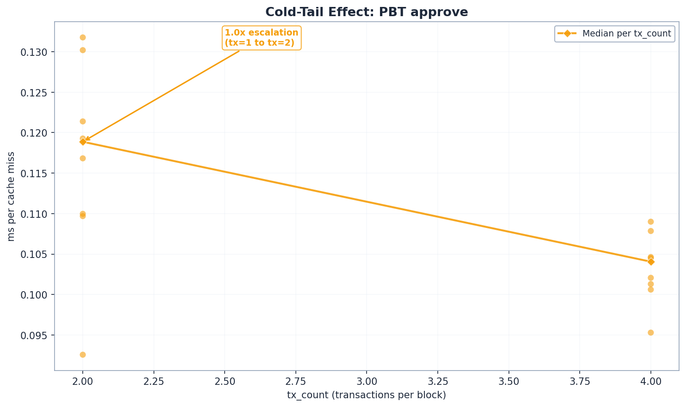
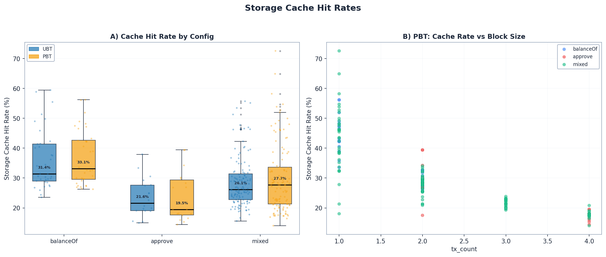
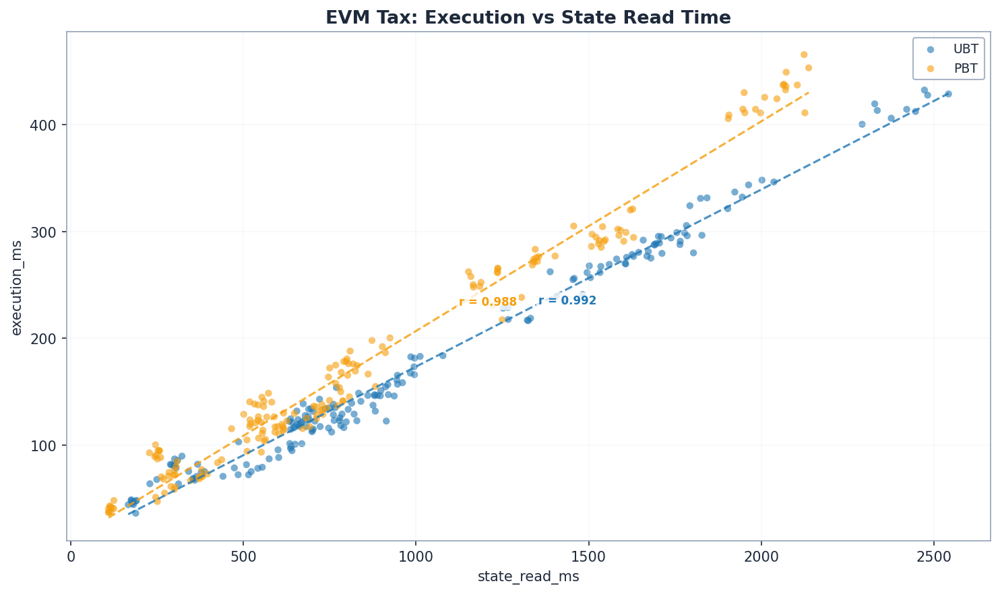

Partitioned Binary Trie (zone-partitioned key derivation + parallel commit) versus Unified Binary Trie (bitarray baseline). Same group depth, same EVM workload, only the key-derivation strategy and commit pipeline change. PBT wins on every benchmark: +11% reads, +21% writes, +18% mixed.
Both configs run the same binary trie (EIP-7864) at group depth 8 with bitarray path encoding. The only variable under test is what happens between an EVM storage key and a trie key:
| Benchmark | UBT Mgas/s | PBT Mgas/s | PBT speedup | 95% CI | p-value |
|---|---|---|---|---|---|
| erc20_balanceof (read) | 15.95 | 17.70 | +11.0% | [1.071, 1.130] | 9.9e-12 |
| erc20_approve (write) | 46.56 | 56.16 | +20.6% | [1.096, 1.235] | 4.5e-7 |
| mixed_sload_sstore | 22.60 | 26.56 | +17.5% | [1.068, 1.313] | 1.3e-5 |
Section 2 explains the two designs in concrete terms. Section 3 covers methodology and the same-state guarantee. Sections 4–6 present each benchmark; Section 7 looks at where PBT's time savings come from (per-slot read, hash, and commit costs). Section 8 is the verdict.
Both UBT and PBT use the same on-disk trie structure: a binary trie with group depth 8 and bitarray path encoding (each group node bundles up to 8 binary levels into a single Pebble entry). The two designs differ in how an EVM access becomes a trie key, and in how the per-block commit pipeline runs.
Every storage access — whether it's a balance read, code chunk fetch, or storage slot — goes through one keccak hash and lands in a single 256-bit keyspace. At commit time, dirty nodes are walked once, hashed, and persisted in one pass through the trie. Simple, but every write touches a tree that mixes accounts, code, and storage interleaved by hash.
The same keccak hashes are still computed, but the result is steered into three sibling zones based on what the access is: basic-data (account fields), code-chunk (contract code), and storage-slot (contract storage). Each zone is its own subtrie of the unified binary trie. At commit time, the three zones run their hash + persist passes in parallel across goroutines.
Concretely, PBT trades a single big trie for three slightly-smaller subtries that can be processed concurrently. The hypothesis under test: the parallelism wins more than the extra subtrie roots cost.
| Property | UBT | PBT |
|---|---|---|
| Group depth | 8 | 8 |
| Path encoding | Bitarray | Bitarray |
| Key derivation | Single hash → one keyspace | Single hash → three zoned keyspaces |
| Per-block commit | Single-pass walk | Three zone walks in parallel |
| Geth branch | feat/binary-trie/bitarray |
binary/pbt |
The full state — accounts, contracts, storage — is identical between configs (same state-actor seed, same spamoor seed). Only the trie shape changes.
| Parameter | Value |
|---|---|
| Machine | Intel Xeon Platinum 8358 @ 2.6 GHz, 8 cores, 31 GB RAM, 2 TB SSD, Debian 13 |
| Group depth | 8 |
| State-actor workload | 125k accounts · 9M contracts · min-slots=1 · max-slots=100,000 · power-law |
| State-actor seed | 25519 (deterministic, both configs) |
| Spamoor bloat | 0.5 GB target (~8.4M ERC20 holder slots) · seed ubt-vs-pbt-smoke |
| Final DB size | UBT 57 GB · PBT 54 GB (state-actor reported 50.7 GB raw, 23.5M storage slots) |
| Benchmarks | erc20_balanceof · erc20_approve · mixed_sload_sstore (5 parametrizations: 10/90, 30/70, 50/50, 70/30, 90/10) |
| Runs | 10 per benchmark per config — 60 cold-cache sessions total |
| Cold cache protocol | Between every session: sync, sudo sysctl -w vm.drop_caches=3, restart geth with --cache 0 |
| Statistical tools | Mann-Whitney U, bootstrap 95% CIs (10k resamples), Welch's t-test, Pearson r |
UBT and PBT share the state-actor seed and the spamoor seed, so the EVM-level workload is byte-identical: same accounts, same contracts, same storage layout, same ERC20 with the same 8.4M holders. The two configs only differ in how a storage access maps to a trie key and in how the commit pipeline runs.
Correctness anchor: the bootstrap analysis reports a gas_per_slot ratio of 1.0000 for all three benchmarks (95% CI [0.9999, 1.0001] for balanceof, [0.9995, 1.0002] for approve). Same logical work per slot in both configs — the timing comparison measures the trie, not the workload.
Caveat: per-block gas_used sequences are not byte-identical because the dev chain mines every 10s and RPC-submitted transactions land in different blocks by timing jitter. The mismatch is purely how txs partition into blocks; gas_per_slot — the right correctness metric — is identical.
| Benchmark | UBT CV% | PBT CV% |
|---|---|---|
| erc20_balanceof | 3.0% | 3.6% |
| erc20_approve | 3.9% | 1.7% |
| mixed_sload_sstore | 3.3% | 12.9% |
Mixed-PBT's higher variance is worth flagging: the +17.5% headline holds (CI excludes 1.0), but the spread is wider than the other benchmarks.
erc20_balanceofThe benchmark calls balanceOf() on the spamoor-deployed ERC20 against ~36k random addresses per block, until ~100M gas of work is done. Each call is a cold SLOAD into a different storage slot in a ~50 GB binary trie. No writes, no execution heavy logic — pure read latency.
| Component | UBT | PBT | PBT vs UBT |
|---|---|---|---|
state_read_ms | 1,285 | 1,143 | −11.1% |
state_hash_ms | 3.16 | 5.40 | +71% |
commit_ms | 17.9 | 21.2 | +19% |
total_ms | 1,520 | 1,384 | −9.0% |
State reads dominate — ~84% of total time for both configs. The Pearson correlation between execution_ms and state_read_ms is r=0.995 for both configs (p < 1e-39): the benchmark is genuinely read-bound.
PBT's win is concentrated where it should be for a read workload: state_read_ms is 11% lower. Even though no commit is happening (balanceof is read-only), the small writes do post per-block bookkeeping which is why commit_ms rises a hair on PBT — three zone roots cost slightly more than one when there's nothing meaningful to commit.
Per-slot read cost: UBT 0.144 ms/slot vs PBT 0.127 ms/slot = −12.1% (CI [0.862, 0.917]).


PBT consistently above UBT across all three benchmarks. Boxes show inter-quartile range over the 10 runs.

erc20_approveThe benchmark calls approve(spender, value) in a loop. Each call is a cold SLOAD (read current allowance) followed by a cold-to-warm SSTORE (write new allowance). The attack EOA maintains a "next free slot" bump pointer at storage[0], so every run writes a fresh chunk of ~4,000 slots — never overwriting a prior run's slots (proved by gas-per-slot staying constant at 22,929 across all 10 runs).
Approve is the most parallel-commit-friendly workload, and PBT's lead is largest here.
| Metric | UBT | PBT | PBT vs UBT | p-value |
|---|---|---|---|---|
ms_per_slot_read | 0.113 | 0.084 | −25.6% | 6.8e-08 |
ms_per_slot_hash | 0.292 | 0.237 | −18.6% | 6.8e-08 |
ms_per_cache_miss | 0.141 | 0.108 | −23.2% | 4.5e-07 |
ms_per_slot_total | 0.492 | 0.408 | −17.1% | 5.2e-07 |
Every cost component — reads, hashing, cache-miss latency, total per-slot time — is meaningfully lower for PBT. The hash savings (−18.6% per slot) come straight from running the three zone subtries' commit passes in parallel: with three subtries instead of one bigger one, the per-block critical path shortens even when wall-clock SHA-256 work is the same.
Note: total_ms for approve shows −12.6% (PBT faster) but Mann-Whitney p=0.081 — not significant due to high run-variance in absolute milliseconds. The throughput and per-slot metrics tell a tighter story; trust those.



mixed_sload_sstoreFive parametrizations split a block's gas budget between SLOAD and SSTORE phases: 10/90, 30/70, 50/50, 70/30, 90/10. The runtime GAS opcode picks the cutoff dynamically, so each parametrization actually executes the requested ratio.
| Metric | UBT | PBT | PBT vs UBT | p-value |
|---|---|---|---|---|
ms_per_slot_read | 0.145 | 0.117 | −19.6% | 1.1e-42 |
ms_per_cache_miss | 0.198 | 0.162 | −18.1% | 5.3e-17 |
ms_per_slot_total | 0.208 | 0.182 | −12.7% | 4.9e-09 |
The mixed workload's gain sits between balanceof's (11%) and approve's (21%) — about where the gas-weighted blend of the two would put it. Run-to-run variance is higher for PBT on this benchmark (CV 12.9%), so the confidence interval is wider, but the headline is still clearly significant.


For both configs, execution_ms tracks state_read_ms with r>0.99. The benchmarks are I/O-bound; trie cost is the dominant cost.
Throughput is a single number. The per-slot decomposition shows which trie operations PBT speeds up, and which (if any) it doesn't.
| Per-slot cost (PBT/UBT ratio) | balanceof | approve | mixed |
|---|---|---|---|
ms_per_slot_read |
0.880 | 0.744 | 0.805 |
ms_per_slot_hash |
— | 0.814 | 0.881 |
ms_per_cache_miss |
0.893 | 0.768 | 0.819 |
ms_per_slot_total |
0.901 | 0.829 | 0.873 |
Pattern 1: PBT is faster on every per-slot timing metric. Reads are 12–26% faster; per-miss latency is 11–23% lower. The zone partitioning produces smaller subtries, which gives shorter average path lengths from root to leaf within each zone — fewer Pebble lookups per slot.
Pattern 2: Hash time wins are bigger when there's hashing to do. PBT's hash advantage shows up on approve (−19%) and mixed (−12%) but is small or negative on balanceof. With three zone subtries committing in parallel, write-heavy workloads benefit more.
Pattern 3: gas_per_slot is identical. 22,929.85 (UBT) vs 22,927.02 (PBT) for approve — bootstrap CI [0.9995, 1.0002]. PBT's gain is genuine engineering, not a hidden gas-schedule shift.
+11–21% Mgas/s across all three benchmarks, with significance well above the noise floor and CIs that exclude 1.0. The same-state guarantee holds (identical gas per slot). The per-slot decomposition shows the wins are in trie traversal and per-zone hashing — exactly where the design intended.
erc20_approve total-ms shows −12.6% (PBT faster) but p=0.081 — total-ms has high absolute-time variance. Throughput and per-slot metrics give the reliable signal.